Projeto de Disciplina Algoritmos de Clusterização
Projeto de Disciplina Algoritmos de Clusterização
Se trata de um modelo de aprendizagem não supervisionado de
clusterização relativos a dados de paises ao redor do mundo. Os dados
foram extraídos do site do
Kaggle.
📄requirements.txtREADME.md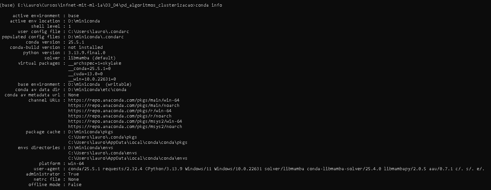
import matplotlib.pyplot as plt
import numpy as np
import os
import pandas as pd
import seaborn as sns
from sklearn.preprocessing import StandardScaler
from sklearn.cluster import KMeans,AgglomerativeClustering
from scipy.cluster.hierarchy import dendrogram, linkage
from sklearn.decomposition import PCA
from kaggle.api.kaggle_api_extended import KaggleApi
from sklearn.metrics.pairwise import euclidean_distances
SEED=42
np.random.seed(SEED)# Inicializar a API do Kaggle
api = KaggleApi()
api.authenticate()
# Criar o diretório se não existir
data_path = 'data'
os.makedirs(data_path, exist_ok=True)
# Baixar os dados do Kaggle
api.dataset_download_files('rohan0301/unsupervised-learning-on-country-data', path=data_path, unzip=True)
path_raw = 'data/'
file_raw_1 = 'Country-data.csv'
file_raw_2 = 'data-dictionary.csv'
pathfile_raw_1 = os.path.join(path_raw, file_raw_1)
pathfile_raw_2 = os.path.join(path_raw, file_raw_2)Dataset URL: https://www.kaggle.com/datasets/rohan0301/unsupervised-learning-on-country-data
def histogram_per_variable_plot(X):
for col in X.columns:
plt.figure()
plt.hist(X[col].dropna())
plt.title(col)
plt.xlabel(col)
plt.ylabel("freq")
plt.show()
def pair_plot(data,figsize_x,figsize_y):
sns.pairplot(data=data,diag_kind='kde')
plt.figure(figsize=(figsize_x, figsize_y))
plt.show()
def scatter_plot(data,x,y,figsize_x,figsize_y):
sns.scatterplot(data=data,x=x,y=y)
plt.figure(figsize=(figsize_x, figsize_y))
plt.show()
def plot_data_clusters(data,centroids):
for c in sorted(np.unique(data['cluster'])):
subset = data[data["cluster"] == c]
plt.scatter(subset["PCA1"], subset["PCA2"], s=80, alpha=0.8, label=f"Cluster {c}")
plt.scatter(centroids[:,0], centroids[:,1], marker="X", s=100)
plt.title("Clusters de Países")
plt.xlabel("Componente Principal 1")
plt.ylabel("Componente Principal 2")
plt.legend()
plt.grid(True)
plt.show()
def plot_dendogram(X):
# Plot the dendrogram
plt.figure(figsize=(20, 6))
# Compute the linkage matrix
Z = linkage(X, method='ward')
dendrogram(Z,labels=X.index.tolist())
plt.title("Dendrogram for Agglomerative Clustering")
plt.xlabel("Sample index")
plt.ylabel("Distance")
plt.show()df = pd.read_csv(pathfile_raw_1)
df.head()| country | child_mort | exports | health | imports | income | inflation | life_expec | total_fer | gdpp | |
|---|---|---|---|---|---|---|---|---|---|---|
| 0 | Afghanistan | 90.2 | 10.0 | 7.58 | 44.9 | 1610 | 9.44 | 56.2 | 5.82 | 553 |
| 1 | Albania | 16.6 | 28.0 | 6.55 | 48.6 | 9930 | 4.49 | 76.3 | 1.65 | 4090 |
| 2 | Algeria | 27.3 | 38.4 | 4.17 | 31.4 | 12900 | 16.10 | 76.5 | 2.89 | 4460 |
| 3 | Angola | 119.0 | 62.3 | 2.85 | 42.9 | 5900 | 22.40 | 60.1 | 6.16 | 3530 |
| 4 | Antigua and Barbuda | 10.3 | 45.5 | 6.03 | 58.9 | 19100 | 1.44 | 76.8 | 2.13 | 12200 |
Conforme mostrado acima, o dataset compõe 167 países
df['country'].shape(167,)Gráficos a faixa dinâmica
histogram_per_variable_plot(df.drop(['country'],axis=1))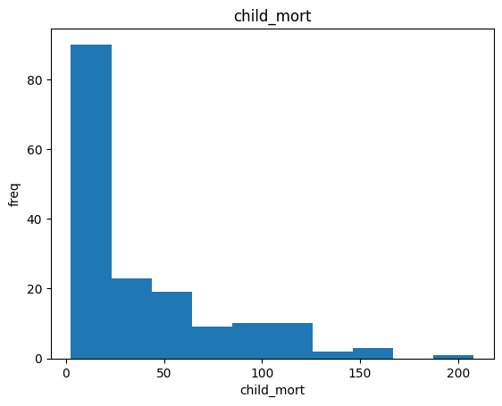
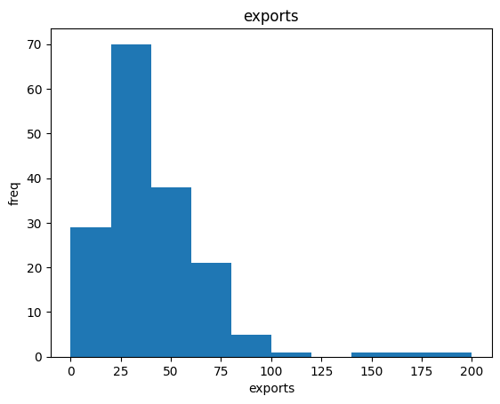
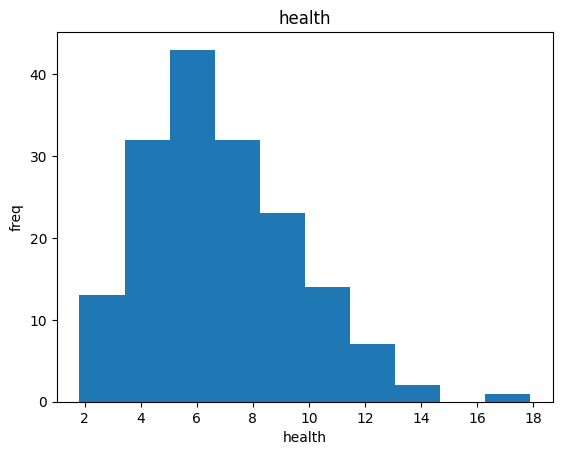
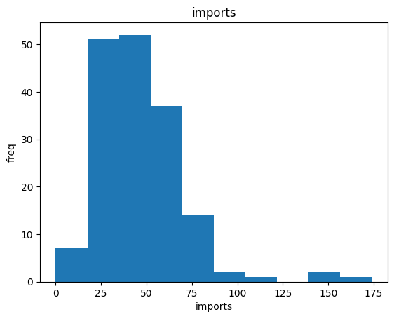
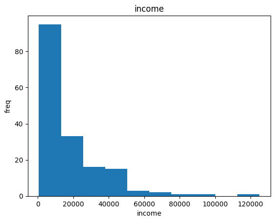
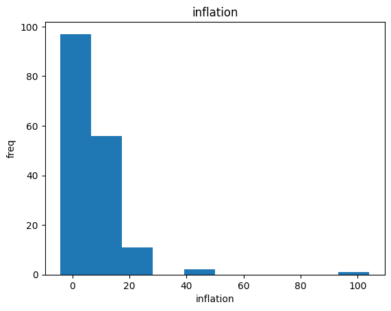
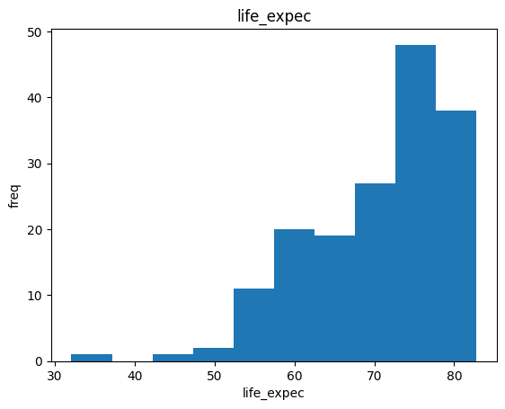
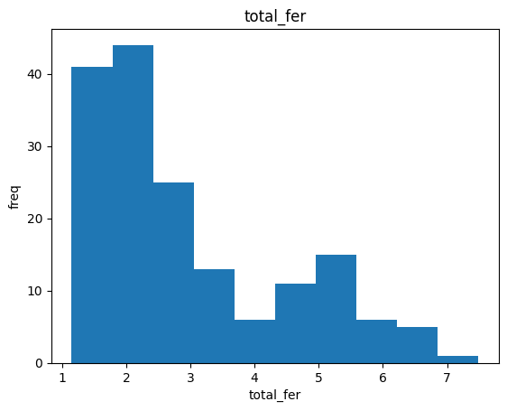
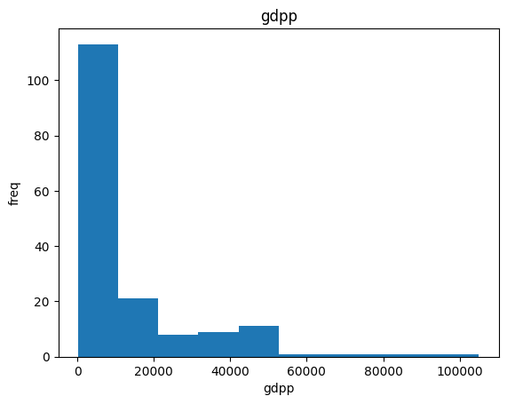
Verificação de dados nulos no dataset
df.info()<class 'pandas.core.frame.DataFrame'>
RangeIndex: 167 entries, 0 to 166
Data columns (total 10 columns):
# Column Non-Null Count Dtype
--- ------ -------------- -----
0 country 167 non-null object
1 child_mort 167 non-null float64
2 exports 167 non-null float64
3 health 167 non-null float64
4 imports 167 non-null float64
5 income 167 non-null int64
6 inflation 167 non-null float64
7 life_expec 167 non-null float64
8 total_fer 167 non-null float64
9 gdpp 167 non-null int64
dtypes: float64(7), int64(2), object(1)
memory usage: 13.2+ KB
Verificacao de dados duplicados no dataset
df[df['country'].duplicated() == True]['country']Series([], Name: country, dtype: object)Padronização dos dados
df.drop(['country'],axis=1).columnsIndex(['child_mort', 'exports', 'health', 'imports', 'income', 'inflation',
'life_expec', 'total_fer', 'gdpp'],
dtype='object')scaler = StandardScaler()
df_scaled_features = pd.DataFrame(columns=df.drop(['country'],axis=1).columns,data=scaler.fit_transform(df.drop(['country'],axis=1)))df_scaled = pd.concat([df['country'],df_scaled_features],axis=1)df_scaled| country | child_mort | exports | health | imports | income | inflation | life_expec | total_fer | gdpp | |
|---|---|---|---|---|---|---|---|---|---|---|
| 0 | Afghanistan | 1.291532 | -1.138280 | 0.279088 | -0.082455 | -0.808245 | 0.157336 | -1.619092 | 1.902882 | -0.679180 |
| 1 | Albania | -0.538949 | -0.479658 | -0.097016 | 0.070837 | -0.375369 | -0.312347 | 0.647866 | -0.859973 | -0.485623 |
| 2 | Algeria | -0.272833 | -0.099122 | -0.966073 | -0.641762 | -0.220844 | 0.789274 | 0.670423 | -0.038404 | -0.465376 |
| 3 | Angola | 2.007808 | 0.775381 | -1.448071 | -0.165315 | -0.585043 | 1.387054 | -1.179234 | 2.128151 | -0.516268 |
| 4 | Antigua and Barbuda | -0.695634 | 0.160668 | -0.286894 | 0.497568 | 0.101732 | -0.601749 | 0.704258 | -0.541946 | -0.041817 |
| ... | ... | ... | ... | ... | ... | ... | ... | ... | ... | ... |
| 162 | Vanuatu | -0.225578 | 0.200917 | -0.571711 | 0.240700 | -0.738527 | -0.489784 | -0.852161 | 0.365754 | -0.546913 |
| 163 | Venezuela | -0.526514 | -0.461363 | -0.695862 | -1.213499 | -0.033542 | 3.616865 | 0.546361 | -0.316678 | 0.029323 |
| 164 | Vietnam | -0.372315 | 1.130305 | 0.008877 | 1.380030 | -0.658404 | 0.409732 | 0.286958 | -0.661206 | -0.637754 |
| 165 | Yemen | 0.448417 | -0.406478 | -0.597272 | -0.517472 | -0.658924 | 1.500916 | -0.344633 | 1.140944 | -0.637754 |
| 166 | Zambia | 1.114951 | -0.150348 | -0.338015 | -0.662477 | -0.721358 | 0.590015 | -2.092785 | 1.624609 | -0.629546 |
167 rows × 10 columns
Xs = df_scaled.drop(['country'],axis=1)Redução de dimensionalidade com PCA para facilitar o plot em 2D
pca = PCA(n_components=2)
X_pca = pca.fit_transform(Xs)df_xpca = pd.DataFrame(columns=['PCA1','PCA2'],data=X_pca)Demonstração dos clusters "esféricos" em PCA2
scatter_plot(data=df_xpca,x='PCA1',y='PCA2',figsize_x=10,figsize_y=5)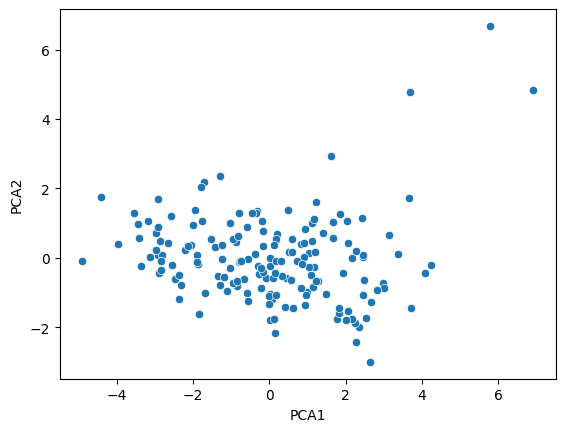
<Figure size 1000x500 with 0 Axes> Etapas até a convergência
1 - Escolher a quantidade de grupos K
2 - Inicialização dos K centróides (aleatórios ou por algum critério, ex: k-means++)
3 - Atribuição: para cada ponto, medir distância para cada centróide → rotular pelo centróide mais próximo
4 - Recalcular centróides: para cada grupo, média dos pontos daquele grupo
5 - Teste de convergência: rótulos não mudaram ou mudança de centróide < tolerância → senão: nova reatribuição
Como o objetivo é minimizar a distância as somas das distâncias ao centroid, qualquer valor extremo puxa a média (centroid é a média)
Alternativa - DBScan
Não utiliza centróide , não tenta minimizar a distância global e todo valor extremo é considerado um ruído
realizando o treinamento do modelo kmeans e gerando as labels
model_kmeans = KMeans(n_clusters=3,max_iter=500,init='k-means++', n_init=10)
km_labels = model_kmeans.fit_predict(X_pca)
km_centroids = model_kmeans.cluster_centers_criação da coluna 'cluster'
df_xpca['cluster'] = km_labels
df_xpca| PCA1 | PCA2 | cluster | |
|---|---|---|---|
| 0 | -2.913025 | 0.095621 | 1 |
| 1 | 0.429911 | -0.588156 | 2 |
| 2 | -0.285225 | -0.455174 | 2 |
| 3 | -2.932423 | 1.695555 | 1 |
| 4 | 1.033576 | 0.136659 | 2 |
| ... | ... | ... | ... |
| 162 | -0.820631 | 0.639570 | 1 |
| 163 | -0.551036 | -1.233886 | 1 |
| 164 | 0.498524 | 1.390744 | 2 |
| 165 | -1.887451 | -0.109453 | 1 |
| 166 | -2.864064 | 0.485998 | 1 |
167 rows × 3 columns
Análise dos clusters gerados pelo KMeans
É possivel ver que há uma grande
diferença no distancimaento dos centroids que representam paises
desenvolvidos (Cluster 0), dos paises que represetnam o quantitatido dos
países subdesenvolvidos (Cluster 1 e 2)
Os países desenvolvidos se destacam por
maiores valores em features como life_expec, gdpp, income enquanto
paises subdesenvolvidos se destacam por maiores valores em child_mort
por exemplo
O pais que
melhor representa seu agrupamento é o pais mais próximo do centroid,
analisando abaixo podemos extrair os seguintes paises:
Singapore -> cluster 0
Senegal -> cluster 1
Lebanon -> cluister 2
labels = model_kmeans.labels_
centroids = model_kmeans.cluster_centers_
out = []
for k in range(len(centroids)):
idx = np.where(labels == k)[0] # points in this cluster
pts = df_xpca.drop(['cluster'],axis=1) .iloc[idx]
d = np.linalg.norm(pts - centroids[k], axis=1) # euclidean
nearest = idx[np.argmin(d)]
out.append(nearest)
nearest_points = df_xpca.iloc[out]
nearest_points.index = nearest_points.index.map(df['country'])
nearest_points| PCA1 | PCA2 | cluster | |
|---|---|---|---|
| Singapore | 5.783376 | 6.682090 | 0 |
| Senegal | -1.912170 | 0.091560 | 1 |
| Lebanon | 1.171991 | -0.256295 | 2 |
plot_data_clusters(data=df_xpca,centroids=km_centroids)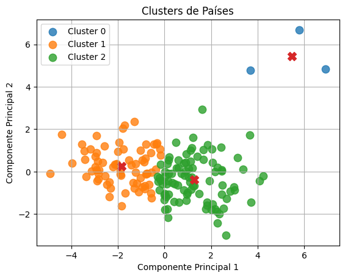
agg_cluster = AgglomerativeClustering(n_clusters=3)
agg_labels = agg_cluster.fit_predict(X_pca)df_xpca['cluster'] = agg_labels
df_xpca.index = df_xpca.index.map(df['country'])
df_xpca| PCA1 | PCA2 | cluster | |
|---|---|---|---|
| Afghanistan | -2.913025 | 0.095621 | 1 |
| Albania | 0.429911 | -0.588156 | 0 |
| Algeria | -0.285225 | -0.455174 | 0 |
| Angola | -2.932423 | 1.695555 | 1 |
| Antigua and Barbuda | 1.033576 | 0.136659 | 0 |
| ... | ... | ... | ... |
| Vanuatu | -0.820631 | 0.639570 | 1 |
| Venezuela | -0.551036 | -1.233886 | 0 |
| Vietnam | 0.498524 | 1.390744 | 0 |
| Yemen | -1.887451 | -0.109453 | 1 |
| Zambia | -2.864064 | 0.485998 | 1 |
167 rows × 3 columns
Geração do dendograma
Análise dos dendograma
É possivel notar o grande salto que temos da
distância 30, do cluster 1, o que deixa a comparação semelhante a
distância do centroid representante dos paises desenvolvidos para os
demais países
plot_dendogram(df_xpca)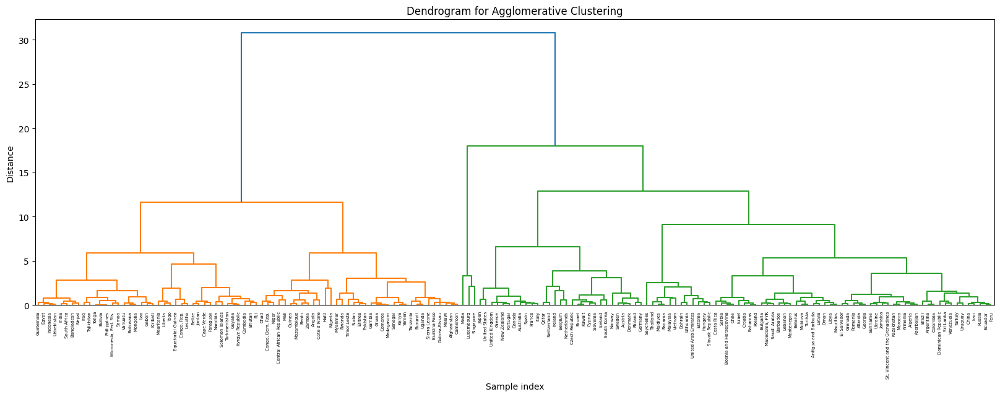